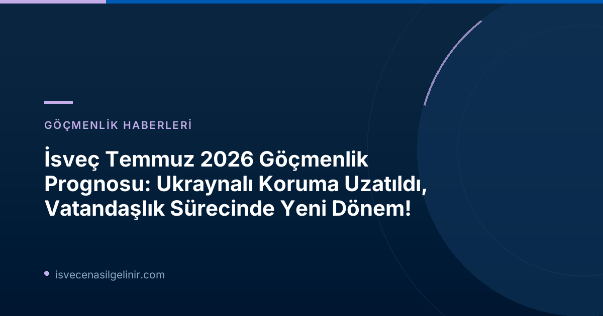

Temmuz 2026 Migrationsverket Göçmenlik ve İltica Raporu: İsveç'teki Değişimler
İsveç Göçmenlik Ofisi (Migrationsverket), 24 Temmuz 2026 tarihinde yayınladığı güncel prognosda, ülkenin göçmenlik, iltica ve vatandaşlık süreçlerinde beklenen önemli değişiklikleri duyurdu. Bu rapor, özellikle Ukraynalılar için geçici koruma statüsünün uzatılması, yeni AB Göç ve İltica Paktı'nın etkileri ve İsveç vatandaşlık başvuru sayılarındaki potansiyel düşüş gibi kritik konulara odaklanıyor.Ukraynalılar İçin Geçici Koruma Süresinde Uzatma
Migrationsverket'in Temmuz prognosu, AB Mass Göç Direktifi kapsamında Ukraynalılar için sağlanan geçici korumanın 12 ay daha, yani 4 Mart 2028 tarihine kadar uzatılacağı varsayımına dayanıyor. Bu varsayım, AB Komisyonu'nun Haziran ayında bu yönde bir teklif sunmasına dayanıyor. Nisan prognosunda, direktifin Mart 2027'de sona ereceği varsayılmıştı.Önemli Tarihler ve Bilgiler
- AB Geçici Koruma Direktifi (Mass Göç Direktifi): Ukraynalılar için geçerli.
- Mevcut Geçici Korumanın Son Geçerlilik Tarihi (Nisan 2026 Prognosu): Mart 2027
- Beklenen Uzatma ile Geçici Korumanın Yeni Son Tarihi: 4 Mart 2028
- Uzatmanın Doyası: AB Komisyonu'nun Haziran 2026'da Avrupa Konseyi'ne sunduğu uzatma teklifi.
Yeni AB Göç ve İltica Paktı'nın Etkileri
Haziran 2026'da yürürlüğe giren AB Göç ve İltica Paktı, uluslararası koruma (önceden iltica) süreçleri başta olmak üzere birçok alanda kapsamlı değişiklikler ve yeni tanımlamalar getirdi. Ramstedt'e göre, bu yeni düzenlemeler istatistiklerde yeni kategorizasyonlara yol açacak, ancak Migrationsverket istatistikleri bu yeni tanımlara tam olarak uyum sağlayana kadar eski tanımlarla çalışmaya devam edecek. Örneğin, uluslararası koruma arayan kişiler hala "iltica başvurusunda bulunanlar" olarak adlandırılacak.Başvuru Kategorilerindeki Güncellemeler ve Sayısal Veriler
Migrationsverket'in Temmuz 2026 prognosu, çeşitli başvuru kategorilerinde önemli sayısal ayarlamalar içeriyor. Aşağıdaki tablo, 2026 yılı için beklenen ilk başvuru sayılarını ve Nisan 2026 prognosuyla karşılaştırmayı göstermektedir:| Başvuru Kategorisi | Temmuz 2026 Prognosu (2026 için) | Nisan 2026 Prognosu (2026 için) | Fark |
|---|---|---|---|
| Ukrayna'dan Koruma Başvuruları | 10.000 | 9.000 | +1.000 |
| İltica, İlk Başvurular | 4.200 | 5.000 | -800 |
| İltica, Uzatma Başvuruları | 17.000 | 17.000 | 0 |
| Öğrenci İşleri (İlk ve Uzatma) | 31.000 | 30.000 | +1.000 |
| Aile Birleşimi İşleri (İlk ve Uzatma) | 59.000 | 61.000 veya 59.000 | -2.000 veya 0 |
| Çalışma İzni İşleri (İlk ve Uzatma) | 70.000 | 70.000 | 0 |
| Vatandaşlık İşleri | 48.000 | 60.000 | -12.000 |
Ukraynalı Geçici Koruma Başvuruları
Prognosta, Ukraynalılar için geçici koruma başvurularının sayısı 2026 yılı için 1.000 kişi artırılarak 10.000'e çıkarıldı. 2027 yılı için de yaklaşık 10.000 başvuru bekleniyor, ancak uzatmanın kesin şekli henüz karara bağlanmadığı için bu konuda belirsizlik devam ediyor. Ramstedt, yılbaşından bu yana beklediklerinden daha fazla Ukraynalının gelmesi nedeniyle 2026 prognosunun yukarı yönlü revize edildiğini belirtti.İltica Başvuruları
Uluslararası koruma (iltica) başvurusunda bulunanların sayısındaki düşüş eğiliminin devam edeceği öngörülüyor ve bu sayı bir önceki prognosa göre bir miktar düşürüldü. Ramstedt, bu düşüşün hem AB'ye gelen iltica başvuru sayısının azalmasından hem de İsveç'in kendi yasalarının ülkeyi iltica başvurusunda bulunanlar için daha az cazip hale getirmesinden kaynaklandığını ifade etti.Çalışma İzni Başvuruları
İsveç'te ilk kez çalışma izni başvurusunda bulunanların sayısının 2027'de azalması bekleniyor. Ancak 2028 için çalışma izni başvurularında belirgin bir artış öngörülüyor. Bu durum, Mass Göç Direktifi'nin sona ermesiyle geçici koruma altındaki kişilerin, daha düşük maaş gerekliliklerinden faydalanarak çalışma izni başvurusunda bulunmalarının beklentisine bağlanıyor.Vatandaşlık Başvuruları
Vatandaşlık konusunda, 6 Haziran 2026 tarihinde yürürlüğe giren yeni yasa, başvuru süreçlerini önemli ölçüde etkileyecek gibi görünüyor. Migrationsverket, hem alınan hem de sonuçlandırılan başvuru sayılarında düşüş bekliyor. Ancak uzun vadede bu etkinin ne kadar büyük olacağına dair belirsizlik devam ediyor. İsveç vatandaşlık süreçleriyle ilgili güncel bilgiler ve olası değişiklikler için sverigemedborgarskapsprov.com adresini ziyaret edebilirsiniz.Geri Dönüş ve Sınır Dışı Kararlarında Azalma
İltica başvuru sayılarındaki düşüşe paralel olarak, koruma başvuruları reddedilen kişilerin geri dönüş sayılarında da azalma görülüyor. Prognos, iltica ile ilgili geri dönüşlerde bütün prognos dönemi boyunca daha düşük sayılar içeriyor. Ayrıca, yıl içindeki ülke dışına çıkış sayıları, Orta Doğu'daki savaş ve Migrationsverket'in belirli genç yetişkinlerle ilgili kararları ertelemesi nedeniyle beklenenden daha düşük seyretti. Gönüllü geri dönüşler için prognos, 2026 ve 2027 yılları için her iki yılda da 200'er geri dönüş azaltıldı.Sonuç
Migrationsverket'in Temmuz 2026 prognosu, İsveç'in göçmenlik ve iltica politikasında devam eden değişimleri gözler önüne seriyor. Ukraynalılar için geçici korumanın uzatılması, yeni AB Paktı'nın entegrasyonu ve vatandaşlık süreçlerindeki yeni yasal düzenlemeler, önümüzdeki dönemde hem başvuru sahipleri hem de ilgili kurumlar için önemli sonuçlar doğuracaktır. İsveç'teki gelişmeleri takip etmek ve güncel bilgilere erişmek için resmi kaynakları ve güvenilir danışmanlık hizmetlerini kullanmak büyük önem taşımaktadır. ---Referanslar
- Migrationsverket. (2026, 24 Temmuz). Få justeringar i juliprognosen.
- sverigemedborgarskapsprov.com
İsveç Göçmenlik Süreci Hakkında Daha Fazla Bilgi Edinin
İsveç'e göç etme, oturum izni, çalışma izni veya vatandaşlık süreçleri hakkında detaylı bilgi ve profesyonel danışmanlık hizmeti almak için bizimle iletişime geçin.